Фото Храму Покрови Пресвятої Богородиці ПЦУ в Черкасах
Фотографії Храму Покрови Пресвятої Богородиці Православної Церкви України
в Черкасах, богослужінь та парафіяльного життя громади.
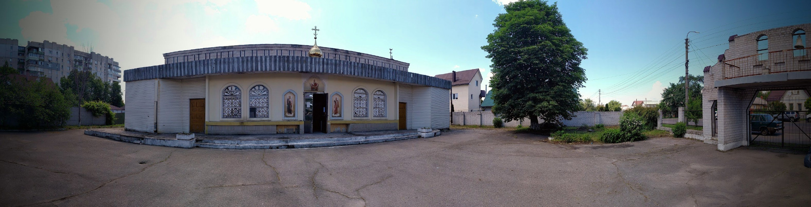
Храм Покрови Пресвятої Богородиці ПЦУ в Черкасах — зовнішній вигляд храму.
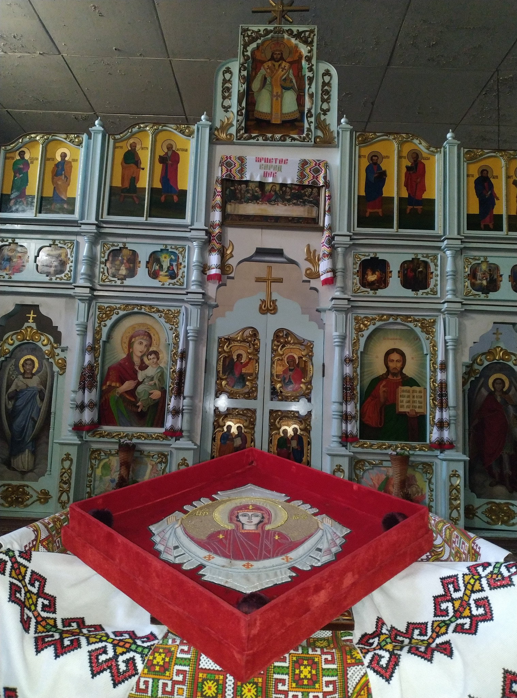
Іконостас Храму Покрови Пресвятої Богородиці ПЦУ в Черкасах.
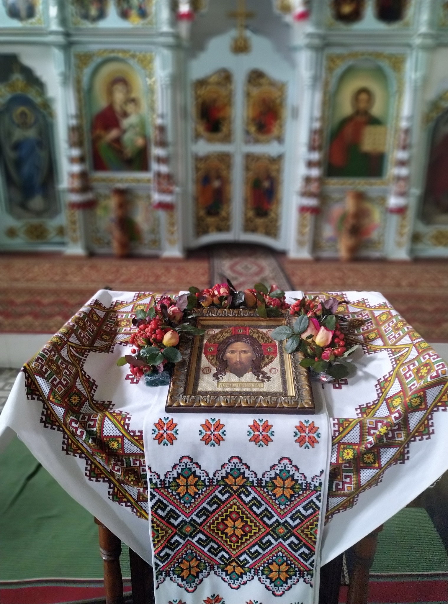
Вівтар Храму Покрови Пресвятої Богородиці ПЦУ в Черкасах, 2022 рік.
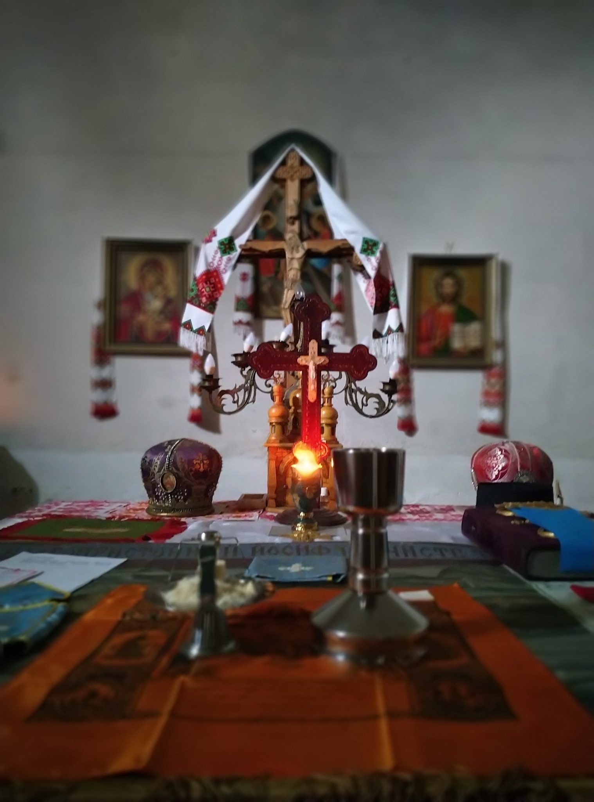
Хрест у вівтарній частині Храму Покрови Пресвятої Богородиці в Черкасах, 2022 рік.
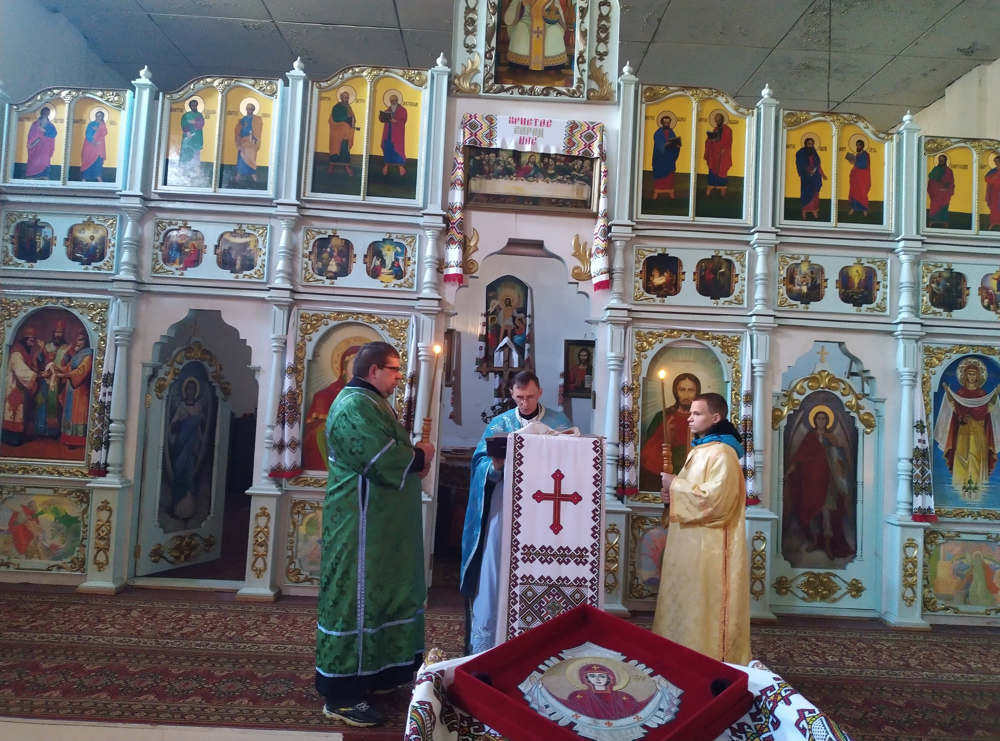
Божественна літургія в Храмі Покрови Пресвятої Богородиці ПЦУ в Черкасах, 2021 рік.
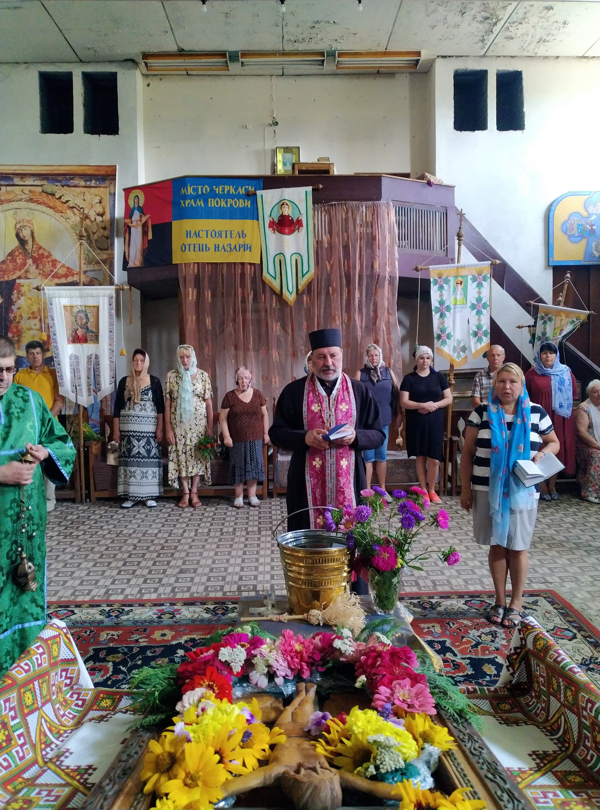
Богослужіння в Храмі Покрови Пресвятої Богородиці ПЦУ в Черкасах, 2022 рік.
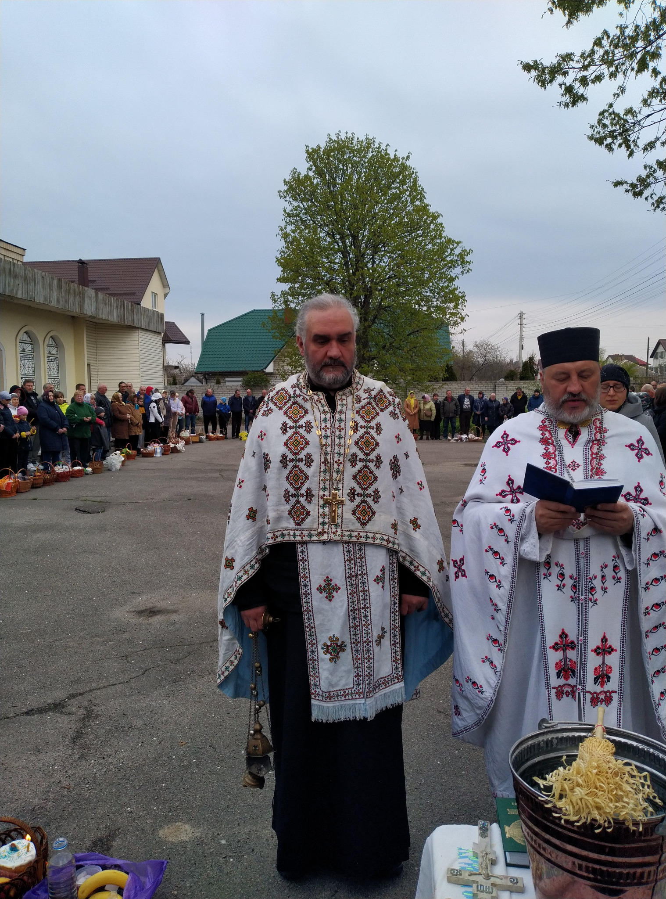
Хресний хід на Великдень біля Храму Покрови Пресвятої Богородиці в Черкасах, 2022 рік.
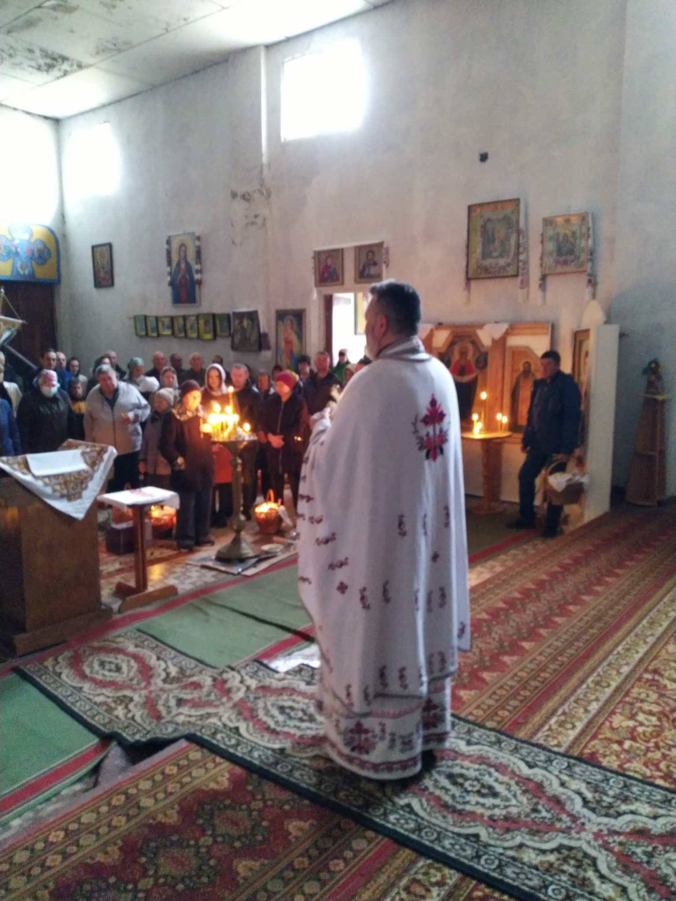
Великоднє богослужіння в Храмі Покрови Пресвятої Богородиці в Черкасах, 2022 рік.
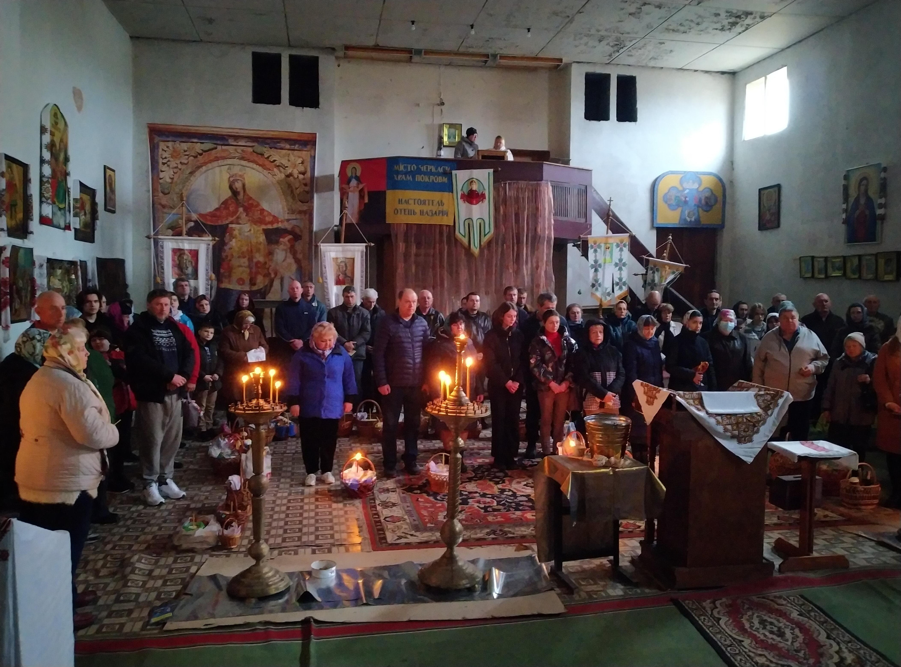
Парафіяни Храму Покрови Пресвятої Богородиці ПЦУ в Черкасах на Великдень, 2022 рік.
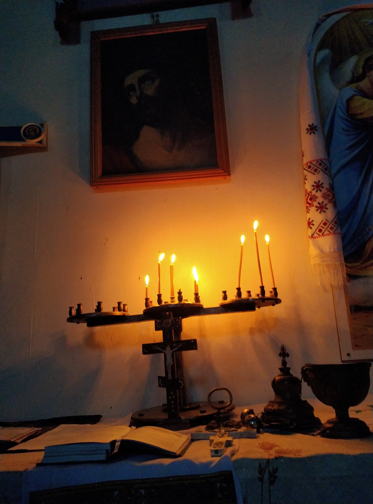
Молитва в Храмі Покрови Пресвятої Богородиці ПЦУ в Черкасах, 2023 рік.
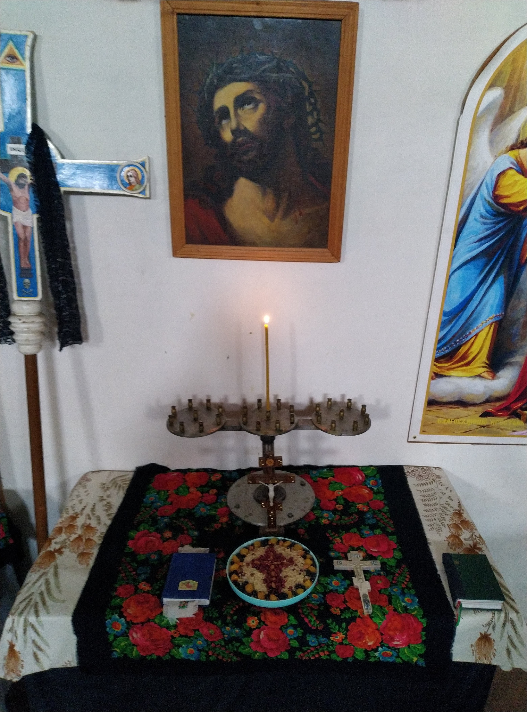
Місце для молитви в Храмі Покрови Пресвятої Богородиці в Черкасах, 2023 рік.
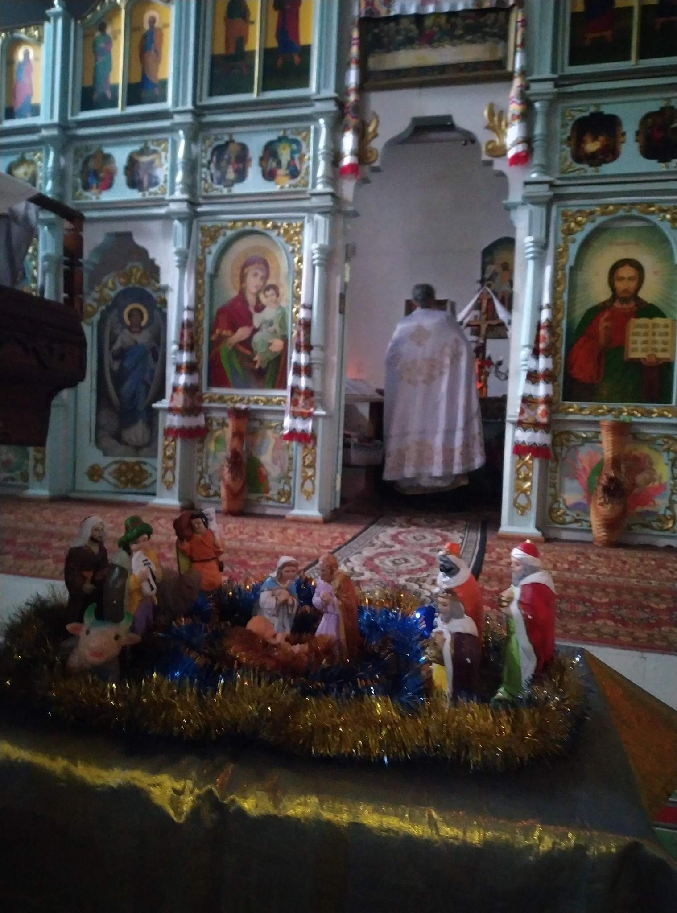
Різдвяне богослужіння в Храмі Покрови Пресвятої Богородиці в Черкасах, 2023 рік.
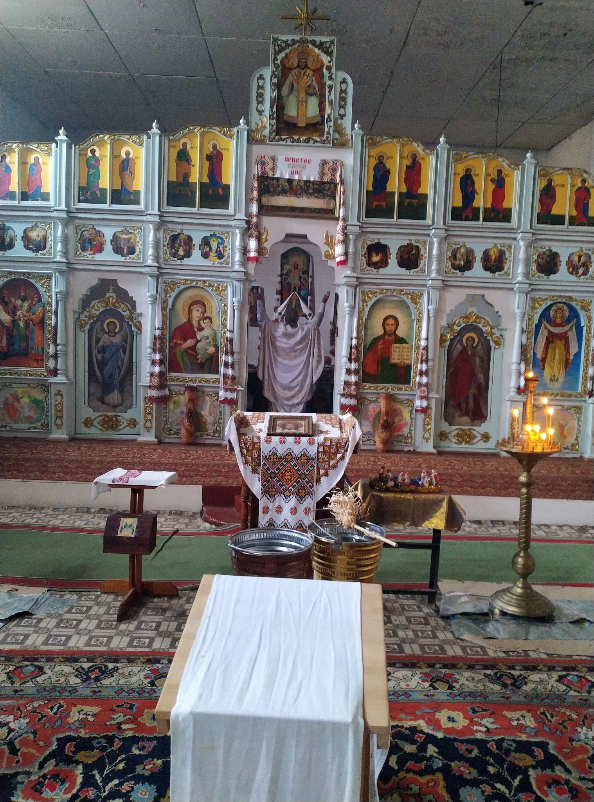
Богослужіння в Храмі Покрови Пресвятої Богородиці ПЦУ в Черкасах, 2023 рік.
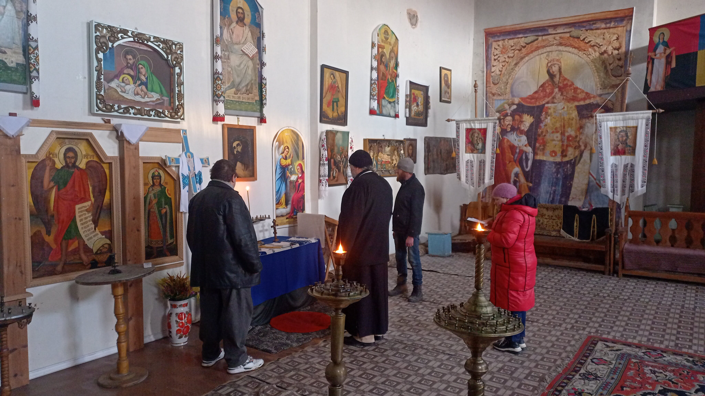
Богослужіння в Храмі Покрови Пресвятої Богородиці ПЦУ в Черкасах, 2024 рік.
← На головну сторінку храму